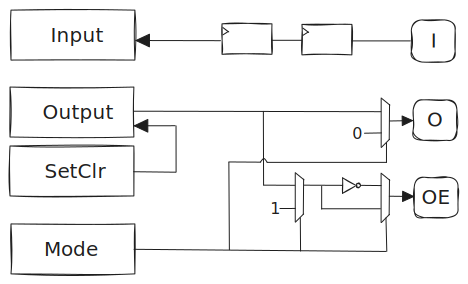
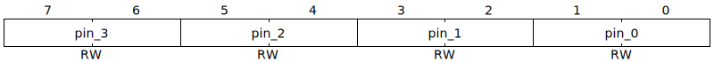
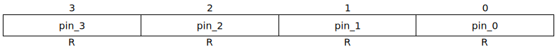
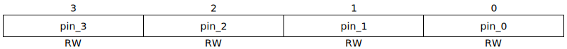
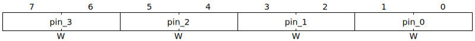

- Start Date: 2024-03-08
- RFC PR: amaranth-lang/rfcs#49
- Amaranth Issue: amaranth-lang/amaranth-soc#77
GPIO peripheral RFC
Summary
Add a SoC peripheral to control GPIO pins.
Motivation
GPIOs are useful for a wide range of scenarios, such as driving external circuitry or acting as fallback for unimplemented/misbehaving peripherals in early iterations of a design.
Amaranth SoC seems like an appropriate place for a GPIO peripheral, which depends on features that are already provided by the library. Due to its relative simplicity, it is also a good candidate for using the recent CSR register API in realistic conditions.
Guide-level explanation
Usage
from amaranth import *
from amaranth.lib import wiring
from amaranth.lib.wiring import connect
from amaranth_soc import csr
from amaranth_soc import gpio
class MySoC(wiring.Component):
def elaborate(self, platform):
m = Module()
# ...
# Use a GPIO peripheral to control four LEDs:
m.submodules.led_gpio = led_gpio = gpio.Peripheral(pin_count=4, addr_width=8, data_width=8)
for n in range(4):
connect(m, led_gpio.pins[n], platform.request("led", n, dir="io"))
# Add the peripheral to a CSR bus decoder:
m.submodules.csr_decoder = csr_decoder = csr.Decoder(addr_width=31, data_width=8)
csr_decoder.add(led_gpio.bus, addr=0x1000)
# ...
return m
Overview
The following figure is a simplified diagram of the peripheral. CSR registers are on the left-hand side, a single pin is on the right side:
Registers
Mode (read/write)

Each Mode.pin_x field can hold the following values:
class Mode(enum.Enum, shape=unsigned(2)):
INPUT_ONLY = 0b00
PUSH_PULL = 0b01
OPEN_DRAIN = 0b10
ALTERNATE = 0b11
Each Mode.pin_x field resets to INPUT_ONLY.
If Mode.pin_x is INPUT_ONLY:
pins[x].oeis 0.pins[x].ois connected toOutput.pin_x.Input.pin_xis connected topins[x].i.alt_mode[x]is 0.
If Mode.pin_x is PUSH_PULL:
pins[x].oeis 1.pins[x].ois conencted toOutput.pin_x.Input.pin_xis connected topins[x].i.alt_mode[x]is 0.
If Mode.pin_x is OPEN_DRAIN:
pins[x].oeis connected to~Output.pin_x.pins[x].ois 0.Input.pin_xis connected topins[x].i.alt_mode[x]is 0.
If Mode.pin_x is ALTERNATE:
pins[x].oeis 0.pins[x].ois connected toOutput.pin_x.Input.pin_xis connected topins[x].i.alt_mode[x]is 1.
When alt_mode[x] is 1, a component connected to the GPIO peripheral (such as a pin multiplexer) may assign implementation-specific functions to Input.pin_x and Output.pin_x.
Input (read-only)

The number of synchronization stages between pins[x].i and Input.pin_x is defined by the input_stages parameter, which defaults to 2. Synchronization is done on rising edges of ClockSignal("sync").
Output (read/write)

Each Output.pin_x field resets to 0.
SetClr (write-only)

- Writing
0b01toSetClr.pin_xsetsOutput.pin_x. - Writing
0b10toSetClr.pin_xclearsOutput.pin_x. - Writing
0b00or0b11toSetClr.pin_xhas no effect.
Reference-level explanation
amaranth_soc.gpio.PinSignature
The gpio.PinSignature class is a wiring.Signature describing the interface between the GPIO peripheral and a single pin.
The members of a gpio.PinSignature are defined as follows:
{
"i": In(unsigned(1)),
"o": Out(unsigned(1)),
"oe": Out(unsigned(1)),
}
amaranth_soc.gpio.Peripheral
The gpio.Peripheral class is a wiring.Component implementing a GPIO controller, with:
- a
.__init__(self, *, pin_count, addr_width, data_width, name=None, input_stages=2)constructor, where:pin_countis a non-negative integer.input_stagesis a non-negative integer.addr_width,data_widthandnameare passed to acsr.Builder
- a
.signatureproperty, that returns awiring.Signaturewith the following members:
{
"bus": In(csr.Signature(addr_width, data_width)),
"pins": Out(gpio.PinSignature()).array(pin_count),
"alt_mode": Out(unsigned(pin_count)),
}
- a
.elaborate(self, platform)method, that connects each pin inself.pinsto its associated fields in the registers exposed byself.bus.
Drawbacks
While existing implementations (such as STM32 GPIOs) have features like pin multiplexing and configurable pull-up/down resistors, in the proposed design, those would have to be implemented in a separate component.
Rationale and alternatives
The proposed design moves platform-specific details outside of its scope, which:
- reduces the amount of non-portable code to maintain, while allowing implementation freedom for users needing it.
- avoids introducing dependencies on upstream APIs that are deprecated or expected to evolve soon (such as
amaranth.build).
As an alternative:
- do not host any peripheral in amaranth-soc and always develop them downstream.
- include a pin multiplexer inside the GPIO peripheral.
Prior art
While they can be found in most microcontollers, the design of GPIOs in STM32 has inspired part of this RFC.
Unresolved questions
-
Should we support synchronizing a pin input on falling edges of the clock ?(@whitequark) Users can synchronize pin inputs on falling edges by instantiating agpio.Peripheralwithinput_stages=0, and providing their own synchronization mechanism. -
What is our policy for backward-compatible extensions of the peripheral ? (@whitequark) If or when we add registers for new optional features, such as pull-ups, switchable schmitt triggers, switchable output driver strengths, etc, each register will always reside at the same fixed (for a given pin count) address regardless of which features are enabled, and each of these registers will be all-0s after reset, where such all-0s value will provide behavior identical to the behavior of the peripheral without the optional feature. Slots in the address space will never be reallocated with a different meaning once allocated upstream in Amaranth SoC.
- This will be important to industry users caring about forward and cross-family/cross-configuration compatibility.
- In a perfect world this would be our policy for every peripheral. Realistically, we'll only be able to provide this strongest guarantee for only a subset of peripherals.
Future possibilities
- Implement a pin multiplexer peripheral, that can be composed with this one to allow reusing other pins of a SoC as GPIOs.
- Add support for interrupts.
Acknowledgements
@whitequark and @tpwrules provided valuable feedback while this RFC was being drafted.